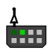
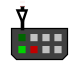
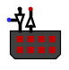
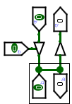
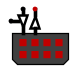

Port I/O
Port I/O
| Librairie : | Entrée/Sortie |
| Introduction : | 3.2.0 |
| Apparence : |

|
Comportement
Ce composant peut présenter un ou deux bus de donnée en entrée et/ou en sortie selon le paramétrage de la l'attribut Type de port. Il s'apparente beaucoup au composant broche avec la particularité de pouvoir associer des entrées et de sorties, mais il ne permet pas l'interconnexion avec des sous-circuits.
- Entrées seulement
-
Le composant se comporte comme une broche d'entrée multibit dans le schéma du circuit.

Il est possible de cliquer avec l'outil pousser sur les broches de l'image du connecteur pour en changer l'état. Celles-ci passeront alternativement de l'état 0 a 1 puis indéfini (gris). Ce changement est illustré pas la couleur du carré représentant la broche. Le bus de sortie reflétera ce changement sur ses lignes. - Sortie seulement
-
Le composant se comporte comme une broche de sortie multibit dans le schéma du circuit.

Il présente simplement l'état des lignes du bus par les carrés de couleur. - E/S (activation globale)
-
Le composant se comporte comme une broche d'entrée/sortie multibit dans le schéma du circuit.

Quand la broche de sélection du buffer contrôlé est à 0, il se comporte comme dans sa configuration Entrées seulement. Vous pouvez modifier l'état des broches de l'image du connecteur de la même manière que pour cette configuration.
Quand la broche de sélection du buffer contrôlé est à 1, l'état du bus sera reporté sur les broches du dessin du connecteur. Attention au conflit avec les sélections que vous auriez apporté sur ces broches.

On peut imaginer le schéma d'une broche de ce composant comme ce qui est présenté ci-dessus. - E/S (activation bit par bit)
-
Le composant se comporte comme une broche d'entrée/sortie multibit dans le schéma du circuit.

Le comportement est le même que précédemment avec la possibilité d'autoriser bit par bit la sortie.
Broches
Note : Attention ici quand on parle d'entrée il s'agit d'une entrée vers le composant Port I/O et quand on parle de sortie il s'agit d'une sortie du composant Port I/O contrairement au reste du texte.
Port I/O présente ses broches différemment selon la configuration de la propriété Type de port. Vous pouvez l'observer sur les figures ci-dessus.
- Bord Nord, avec un buffer pointant vers le haut.
- Sortie : Bus de sortie du port. Largeur de données en bit selon l'attribut Nombre de broches.
- Bord Nord, avec un buffer pointant vers le bas.
- Entrée : Bus d'entrée du port. Largeur de données en bit selon l'attribut Nombre de broches.
- Bord Nord vers l'ouest du buffer contrôlé pointant vers le bas.
- Entrée : Autorisation - Signal autorisant l'entrée des données. Largeur de données en bit 1 si la propriété Type de port est E/S (activation globale) et largeur de données en bit selon l'attribut Nombre de broches si la propriété Type de port est E/S (activation bit par bit).
Attributs
Lorsque le composant est sélectionné ou en cours d'ajout, les touches fléchées modifient son attribut Orientation.
- Orientation
- L'emplacement de la broche de sortie par rapport au composant.
- Étiquette
- Le texte de l'étiquette associée au composant.
- Emplacement de l'étiquette
- L'emplacement de l'étiquette par rapport au composant.
- Police de l'étiquette
- La police de caractères avec laquelle l'étiquette doit être affichée.
- Couleur de l'étiquette
- La couleur avec laquelle l'étiquette doit être dessinée.
- Étiquette Visible
- Détermine si l'étiquette est visible ou non.
- Nombre de broches
- Détermine le nombre de broches dans le composant.
- Type de port
-
Entrée uniquement Toute les broches sont des entrées dans le schéma du circuit.
Sortie uniquement Toute les broches sont des sorties dans le schéma du circuit.
Validation unique de la sortie Les broches peuvent être des entrées ou des sorties, avec une entrée de validation pour autoriser la sortie.
Activation de la sortie par bit Les broches peuvent être des entrées ou des sorties, avec une entrée de validation bit par bit pour autoriser la sortie.
Comportement de l'outil pousser
Un clic gauche sur un des carrés représentant un contacte du port modifie l'état de la sortie correspondante en conséquence.
Comportement de l'outil text
Permets de modifier l'étiquette associée au composant.
Retour à Référence de la bibliothèque